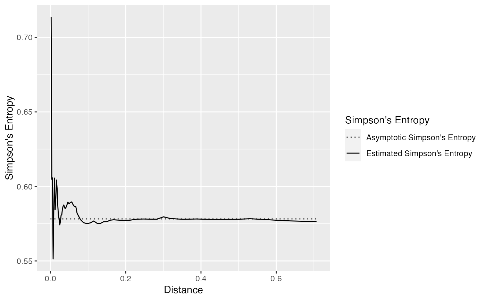
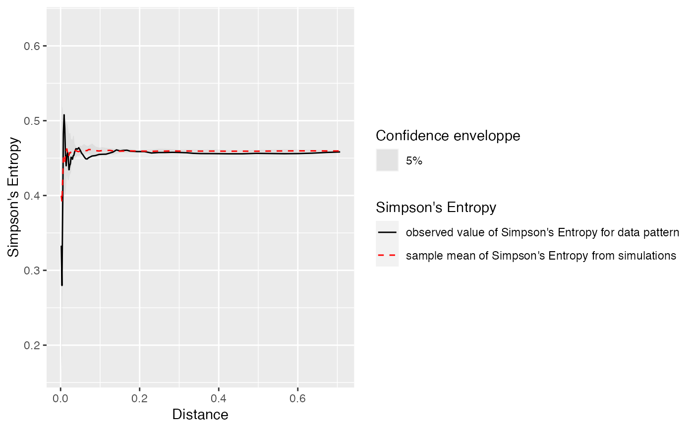

Simpson's entropy of the neighborhood of individuals, up to a distance (Shimatani 2001) .
Simpson_r(
spCommunity,
r = NULL,
spCorrection = "isotropic",
CheckArguments = TRUE
)
Simpson_rEnvelope(
spCommunity,
r = NULL,
NumberOfSimulations = 100,
Alpha = 0.05,
spCorrection = "isotropic",
SimulationType = "RandomLabeling",
Global = FALSE,
CheckArguments = TRUE
)A spatialized community (A wmppp.object with PointType values as species names.)
A vector of distances. If NULL accumulation is along n, else neighbors are accumulated in circles of radius r.
The edge-effect correction to apply when estimating the K function with Kest. Default is "isotropic".
If TRUE (default), the function arguments are verified. Should be set to FALSE to save time in simulations for example, when the arguments have been checked elsewhere.
The number of simulations to run, 100 by default.
The risk level, 5% by default.
A string describing the null hypothesis to simulate. The null hypothesis may be "RandomPosition": points are drawn in a Poisson process (default); "RandomLabeling": randomizes point types, keeping locations unchanged.
Logical; if TRUE, a global envelope sensu (Duranton and Overman 2005)
is calculated.
Simpson_r returns an object of class fv, see fv.object.
There are methods for print and plot for this class.
It contains the value of the spatially explicit Simpson's entropy for each distance in r.
Simpson_rEnvelope returns an envelope object envelope.
There are methods for print and plot for this class.
It contains the observed value of the function, its average simulated value and the confidence envelope.
Duranton G, Overman HG (2005).
“Testing for Localisation Using Micro-Geographic Data.”
Review of Economic Studies, 72(4), 1077--1106.
doi: 10.1111/0034-6527.00362
.
Shimatani K (2001).
“Multivariate Point Processes and Spatial Variation of Species Diversity.”
Forest Ecology and Management, 142(1-3), 215--229.
doi: 10.1016/s0378-1127(00)00352-2
, https://doi.org/10.1016/s0378-1127(00)00352-2.
# Generate a random community
spCommunity <- rSpCommunity(1, size=1000, S=3)
# Calculate the entropy and plot it
autoplot(Simpson_r(spCommunity))

# Generate a random community
spCommunity <- rSpCommunity(1, size=1000, S=3)
# Calculate the entropy and plot it
autoplot(Simpson_rEnvelope(spCommunity, NumberOfSimulations=10))
#> Generating 10 simulations by evaluating expression ...
#> 1, 2, 3, 4, 5, 6, 7, 8, 9, 10.
#>
#> Done.
